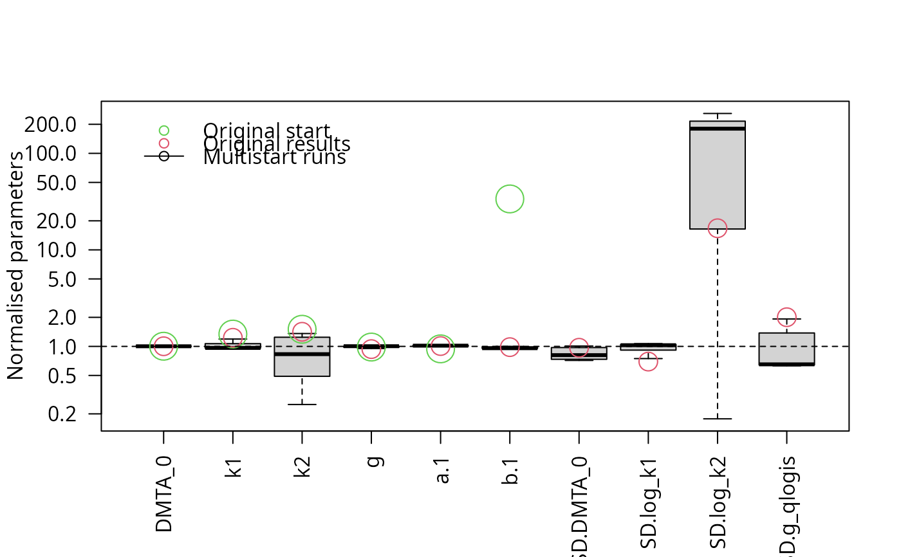

The purpose of this method is to check if a certain algorithm for fitting nonlinear hierarchical models (also known as nonlinear mixed-effects models) will reliably yield results that are sufficiently similar to each other, if started with a certain range of reasonable starting parameters. It is inspired by the article on practical identifiabiliy in the frame of nonlinear mixed-effects models by Duchesne et al (2021).
multistart(
object,
n = 50,
cores = if (Sys.info()["sysname"] == "Windows") 1 else parallel::detectCores(),
cluster = NULL,
...
)
# S3 method for saem.mmkin
multistart(object, n = 50, cores = 1, cluster = NULL, ...)
# S3 method for multistart
print(x, ...)
best(object, ...)
# S3 method for default
best(object, ...)
which.best(object, ...)
# S3 method for default
which.best(object, ...)The fit object to work with
How many different combinations of starting parameters should be used?
How many fits should be run in parallel (only on posix platforms)?
A cluster as returned by parallel::makeCluster to be used for parallel execution.
Passed to the update function.
The multistart object to print
A list of saem.mmkin objects, with class attributes 'multistart.saem.mmkin' and 'multistart'.
The object with the highest likelihood
The index of the object with the highest likelihood
Duchesne R, Guillemin A, Gandrillon O, Crauste F. Practical identifiability in the frame of nonlinear mixed effects models: the example of the in vitro erythropoiesis. BMC Bioinformatics. 2021 Oct 4;22(1):478. doi: 10.1186/s12859-021-04373-4.
# \dontrun{
library(mkin)
dmta_ds <- lapply(1:7, function(i) {
ds_i <- dimethenamid_2018$ds[[i]]$data
ds_i[ds_i$name == "DMTAP", "name"] <- "DMTA"
ds_i$time <- ds_i$time * dimethenamid_2018$f_time_norm[i]
ds_i
})
names(dmta_ds) <- sapply(dimethenamid_2018$ds, function(ds) ds$title)
dmta_ds[["Elliot"]] <- rbind(dmta_ds[["Elliot 1"]], dmta_ds[["Elliot 2"]])
dmta_ds[["Elliot 1"]] <- dmta_ds[["Elliot 2"]] <- NULL
f_mmkin <- mmkin("DFOP", dmta_ds, error_model = "tc", cores = 7, quiet = TRUE)
f_saem_full <- saem(f_mmkin)
f_saem_full_multi <- multistart(f_saem_full, n = 16, cores = 16)
parplot(f_saem_full_multi, lpos = "topleft")

illparms(f_saem_full)
#> [1] "sd(log_k2)"
f_saem_reduced <- update(f_saem_full, no_random_effect = "log_k2")
illparms(f_saem_reduced)
# On Windows, we need to create a cluster first. When working with
# such a cluster, we need to export the mmkin object to the cluster
# nodes, as it is referred to when updating the saem object on the nodes.
library(parallel)
cl <- makePSOCKcluster(12)
f_saem_reduced_multi <- multistart(f_saem_reduced, n = 16, cluster = cl)
#> Error in checkForRemoteErrors(val): 16 nodes produced errors; first error: unused argument (mc.preschedule = FALSE)
parplot(f_saem_reduced_multi, lpos = "topright")
#> Error in parplot(f_saem_reduced_multi, lpos = "topright"): object 'f_saem_reduced_multi' not found
stopCluster(cl)
# }